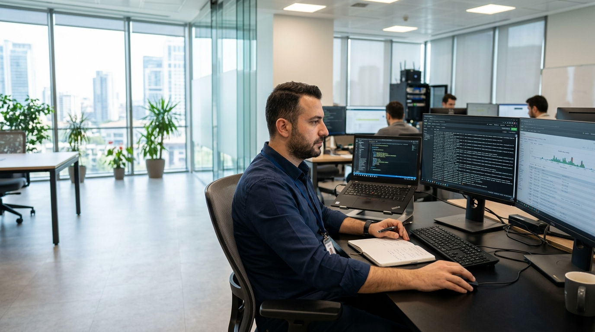
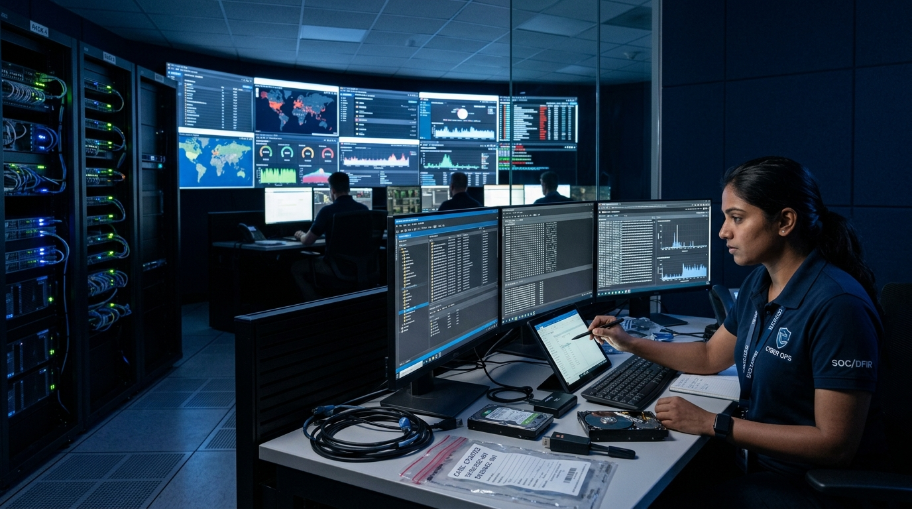
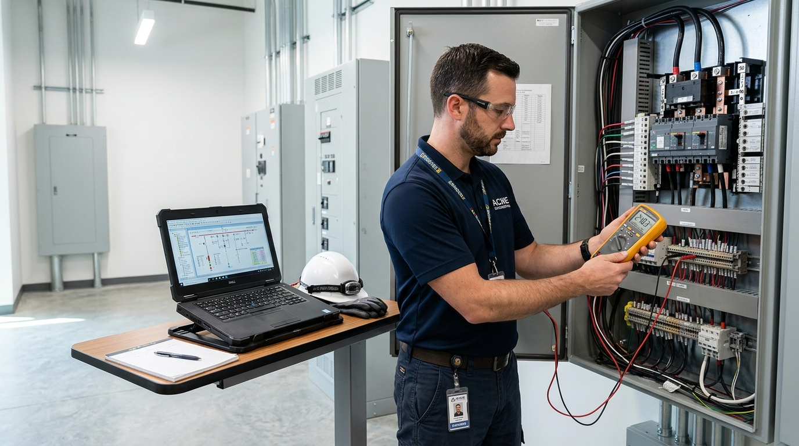
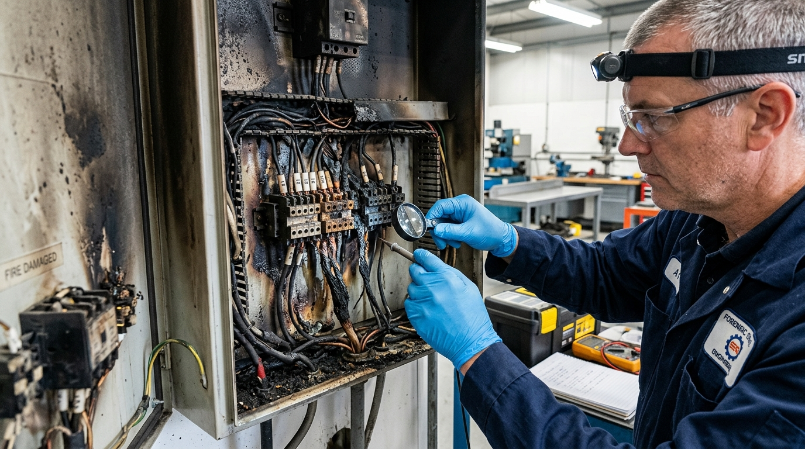
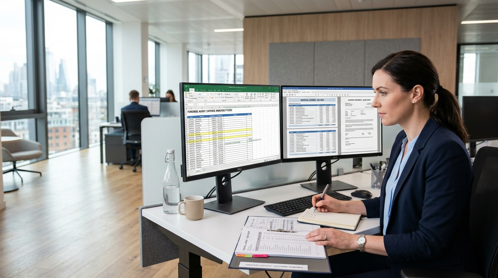

Adli Bilişim & Delil
Siber Güvenlik
Elektrik & Mühendislik
Yangın & Kök Neden Enerji Sistemleri
Enerji Sistemleri

Adli Hesap & Mütalaa
Adli Bilişim & Delil
Siber Güvenlik
Elektrik & Mühendislik
Yangın & Kök Neden
Enerji Sistemleri

Adli Hesap & Mütalaa